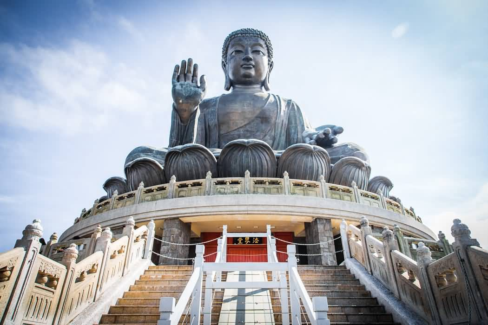

Tiantan Buddha (The Big Buddha)
I had visited this place a long time ago. It was glamourous.
The statue's base is a model of the Altar of Heaven or Earthly Mount of Tian Tan, the Temple of Heaven in Beijing. One of the five large Buddha statues in China, it is enthroned on a lotus on top of a three-platform altar.[2] Surrounding it are six smaller bronze statues known as "The Offering of the Six Devas" that are posed offering flowers, incense, lamp, ointment, fruit, and music to the Buddha. These symbolise the Six Perfections of generosity, morality, patience, zeal, meditation, and wisdom, all of which are necessary for enlightenment.[citation needed]
The statue is 34 metres (112 ft) tall, weighs over 250 metric tons (280 short tons), and was constructed from 202 bronze pieces. In addition to the exterior components, there is a strong steel framework inside to support the heavy load. Reputedly the figure can be seen across the bay from as far away as Macau on a clear day.[citation needed] Visitors have to climb 268 steps to reach the Buddha,[2] though the site also features a small winding road for vehicles to provide access for disabled people. The Buddha's right hand is raised, representing the removal of affliction, while the left rests open on his lap in a gesture of generosity. He faces north, which is unique among the great Buddha statues, as all others face south.[citation needed]
There are also three floors beneath the statue: the halls of the Universe, of Benevolent Merit and of Remembrance. One of the most renowned features inside is a relic of Gautama Buddha,[3] consisting of some of his alleged cremated remains. Only visitors who purchase an offering for the Buddha are allowed to see the relic, entering to leave it there. There is a huge carved bell inscribed with images of Buddhas in the show room. It was designed to ring every seven minutes, 108 times a day, symbolising the release of 108 kinds of human vexations.